stat_smooth
Add a smoother
Details
Aids the eye in seeing patterns in the presence of overplotting.
See layer and qplot for more information on creating a complete plot from multiple components.
New variables produced by the statistic
To use these variables in an aesthetic mapping, you need to surrond them with .., like aes(x = ..output..).
y, predicted valuemin, lower pointwise confidence interval around the meanmax, upper pointwise confidence interval around the meanse, standard error
Parameters
When an aesthetic is used an a parameter, like stat_smooth(method = 3), it will override mappings from data.
method, smoothing method (function) to use, eg. lm, glm, gam, loess, rlmformula, formula to use in smoothing function, eg. y ~ x, y ~ poly(x, 2), y ~ log(x)se, display one standard error on either side of fit? (true by default)n, number of points to evaluate smoother atfullrange, should the fit span the full range of the plot, or just the dataxseq, exact points to evaluate smooth at, overrides nlevel, level of confidence interval to use
Default geom
geom_smooth. Override with the geom argument: stat_smooth(geom="point").
Examples
> c <- ggplot(mtcars, aes(y=wt, x=qsec)) > c + stat_smooth() 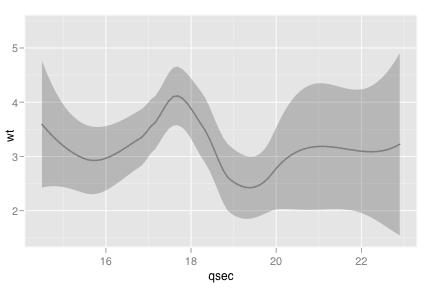 > c + stat_smooth() + geom_point()> > # Adjust parameters > c + stat_smooth(se = FALSE) + geom_point() 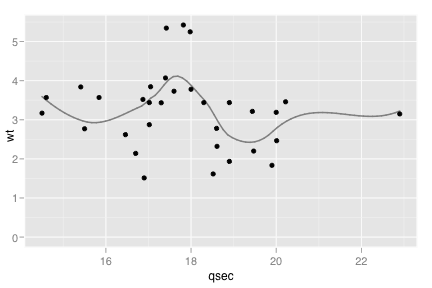 > > c + stat_smooth(span = 0.9) + geom_point() 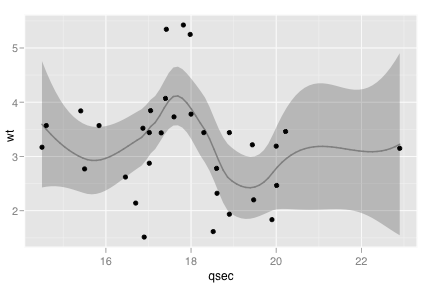 > c + stat_smooth(method = "lm") + geom_point() 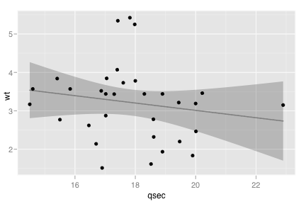 > c + stat_smooth(method = lm, formula= y ~ ns(x,3)) + geom_point() 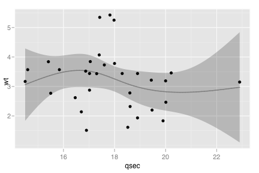 > c + stat_smooth(method = rlm, formula= y ~ ns(x,3)) + geom_point() 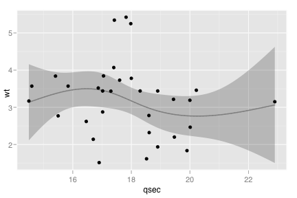 > > # Add aesthetic mappings > c + stat_smooth(fill="blue", colour="darkblue", size=2) 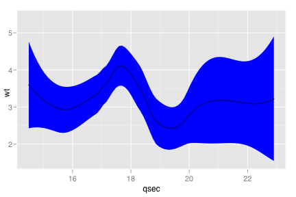 > c + stat_smooth(fill=alpha("blue", 0.2), colour="darkblue", size=2) 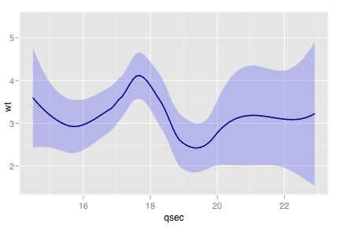 > c + geom_point() + stat_smooth(fill=alpha("blue", 0.2), colour="darkblue", size=2) 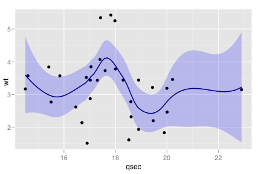 > > # Smoothers for subsets > c <- ggplot(mtcars, aes(y=wt, x=mpg), . ~ cyl) > c + stat_smooth(method=lm) + geom_point() 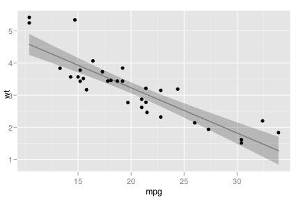 > c + stat_smooth(method=lm, fullrange=T) + geom_point() > > # Geoms and stats are automatically split by aesthetics that are factors > c <- ggplot(mtcars, aes(y=wt, x=mpg, colour=factor(cyl))) > c + stat_smooth(method=lm) + geom_point() 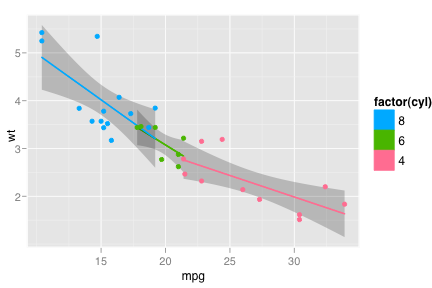 > c + stat_smooth(method=lm, fullrange=TRUE, fill=alpha("black", 0.1)) + geom_point() 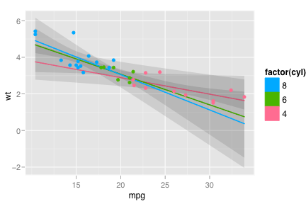 > > # Use qplot instead > qplot(qsec, wt, data=mtcars, geom=c("smooth", "point"))